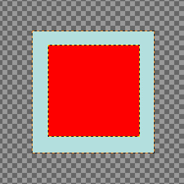
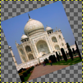
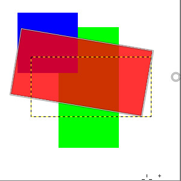

To access these tools, select → from the main menu.
Inside the Transformation tool dialog, you will find tools to modify the presentation of the image or the presentation of an element of the image, selection, layer or path. Each transform tool has an Option dialog and an Information dialog to set parameters.
This category includes the following tools:
Some options are shared by several transform tools. We will describe them here. More specific options will be described with their tool.
- Transform
-
GIMP offers four buttons in the Tool Options which let you select which image element the transform tool will work on.
![[Note]](images/note.png)
Note The Transform option for a tool persists after changing tools.
-
 Layer
Layer
-
When you activate the first button, the tool works on the active layer. If no selection exists in this layer, the whole layer will be transformed.
-
 Selection
Selection
-
When you activate the second button, the tool works on the selection only, or the whole layer if there is no selection.
-
 Path
Path
-
When you activate the third button, the tool works on the active path only.
- Image
-
When you activate the fourth button, the transformation is applied to all layers.
Figure 14.87. Example with Rotate

Two layers, the red one being smaller. → option checked.

Fourth button pressed, Rotate tool applied. Note the adaptation of layer sizes.
-
- Direction
-
This option sets which way or direction a layer is transformed:
The “Normal (Forward)” mode will transform the image or layer as one might expect. You just use the handles to perform the transformation you want. If you use a grid (see below), the image or layer is transformed according to the shape and position you put the grid into.
“Corrective (Backward)” inverts the direction. Primarily used with the Rotation tool to repair digital images that have some geometric errors (a horizon not horizontal, a wall not vertical, etc). See Section 4.5, “Rotate”.
You can link these two options in Rotate, Scale, Perspective, Unified transform and Handle transform tools. This allows moving handles without affecting the transformation, letting you manually readjust their position.
- Interpolation
-
This drop-down list lets you choose the method of the transformation. The chosen method influences the speed and quality, though it also depends on the image and the type of transformation what will work best in each case.
- None
-
The color of each pixel is copied from its closest neighboring pixel in the original image. This often results in aliasing (the “stair-step” effect) and a coarse image, but it is the fastest method. Sometimes this method is called “Nearest Neighbor”.
- Linear
-
The color of each pixel is computed as the average color of the four closest pixels in the original image. This gives a satisfactory result for most images and is a good compromise between speed and quality. Sometimes this method is called “Bilinear”.
- Cubic
-
The color of each pixel is computed as the average color of the eight closest pixels in the original image. This usually gives a good result, although there are some cases where it can actually look worse than Linear and it is also slower. Sometimes this method is called “Bicubic”.
- LoHalo, NoHalo
-
These methods perform a high quality interpolation. Use the NoHalo method when you downscale an image to less than a half of the original size and the LoHalo method when you do not reduce the size much (rotate, shear).
A “Halo” is an artifact that can be created by interpolation. It reminds of the halo you can get when using Section 4.8, “Sharpen (Unsharp Mask)”. Here is a note from Nicolas Robidoux, the creator of these quality samplers for GEGL and GIMP:
"If haloing is not an issue with your content and use case,
which of the two should you try first?
(Clearly, if you want to minimize haloing, NoHalo is the
ticket.)
If you are reducing an image, LoHalo is generally better.
If your transformation is not an all around reduction, for
example if you enlarge, rotate or apply a perspective
transformation that keeps portions of the image at the same or
higher resolution, I generally prefer NoHalo. This preference,
however, changes depending on the image content. If, for
example, the image contains text or text-like objects or has
significant areas with only a handful of different colours,
like old school pixel art, I’d switch to LoHalo. Likewise if
the image is quite noisy or marred by compression artifacts
(as are most JPEGs found on the web). Conversely, if the
image is noise free, very slightly blurry (meaning that when
pixel peeking, the lines and interfaces are smeared over two
or more pixels), and there are delicate skin tones to be
preserved, I’d try NoHalo first. Actually, if I find that
colours have not been preserved nicely after transforming an
image with LoHalo, I’d immediately switch to NoHalo, even if
reducing.
In any case, these recommendations should not be taken as
gospel. I still have much to learn and figure out. For
example, how best to deal with transparency and different
colour spaces is something I’m likely to be thinking about
for a while."
Note You can set the default interpolation method in the Tool Options Preferences.
- Clipping
-
After transformation, the image can be bigger. This option will clip the transformed image to the original image size.
You can choose between several ways to clip:
- Adjust
-
Figure 14.88. Original image for examples
Original image

Rotation applied with “Adjust”

Rotation applied with “Adjust” and canvas enlarged to layer size
With Adjust: the layer is enlarged to contain all the rotated layer. The new layer border is visible; the whole layer becomes visible by using the → command.
- Clip
-
With Clip: all what exceeds image limits is deleted.
- Crop to result
-
Figure 14.90. Example for Crop to result
Rotation 45° with Crop to result

The crop limit is marked with red. No transparent area is included.
If this option is selected, the image is cropped so that the transparent area, created by the transform operation in corners, will not be included in the resulting image.
- Crop with aspect
-
This option works like the one described before, but makes sure, that the aspect ratio is maintained.
- Show image preview
-
If this is marked, which is the default setting, the transformed image will be visible on top of the original image or layer. There will also be a slider with which you may select the preview opacity.
- Composited preview
-
Inspired from https://librearts.org/2020/02/gimp-2-10-18-full-review
Show preview as part of the image composition: when you have multiple layers, each one with its own blending mode and opacity, transforming it means it pops up right above every other layer. So in a complex layers composition you can't align this layer against other layers without much trial and error.
The Composited Preview option removes this problem in favor of rendering the preview of the transformed layer exactly where it is in the layers stack, exactly with the opacity and blending mode of choice.

Original image with four layers.

The red layer opacity is 80%.
Figure 14.92. Composited Preview Example

Composited option unchecked: in preview, red layer is above all other layers.

Composited option checked: in preview, red layer is at its right place, like in layer stack.
One sub option is available:
-
Synchronous preview: this option is experimental. The idea is to render the preview as soon as you change the transform. So instead of waiting for the mouse to stop moving, it renders the result immediately. If GIMP can render everything fast enough, this means a much smoother and more instant feedback.
But this option also blocks everything until the preview is done rendering. This means, GIMP can become much less responsive, usually when the layer is very large. That's why this is disabled by default.
-
- Guides
-
This is a drop-down list where you select the type of guide lines which suits your transforming. All the guides use a frame to mark the image's outline in addition to the lines used by the different selections.
- No guides
-
As the name tells you, there are no guides used.
- Center lines
-
Uses one vertical line and one horizontal line crossing each other in the center of the image or layer.
- Rule of thirds
-
Divides the transforming area in nine equal parts by adding two horizontal lines and two vertical lines equally spaced. According to this rule the most interesting parts of the image should be placed at the intersection points.
- Rule of fifths
-
Just as the “Rules of thirds” but divides the area in five by five parts.
- Golden sections
-
Also called “The Golden Ratio”. This divides the transforming area in nine parts using a mathematical formula proportioning the parts to each others and to the area to be transformed.
- Diagonal lines
-
Divide the transforming area using diagonally lines.
- Number of lines
-
Puts a rectangular grid with equal numbers of vertically and horizontally lines. The number of lines is set in the slider popping up when this guide is selected.
- Line spacing
-
Puts a rectangular grid on the transforming area using the spacing between the lines set in the slider.


If you for some reason want to transform paths, it is possible to do this using the transform tools.


When the path is drawn go to the Paths dialog and click on the first field before the path outline in the dialog window to get the eye icon visible. Then choose the transformation tool and in the upper part of the option dialog click on the path icon to tell the tool to act on the path.
Do the transformation the usual way and confirm it when finished. It could be a good idea to set the Guides to “No guides” to get the path more recognizable.
When the transformation is finished, choose the path tool and click on the changed path to activate it again for further working on it.